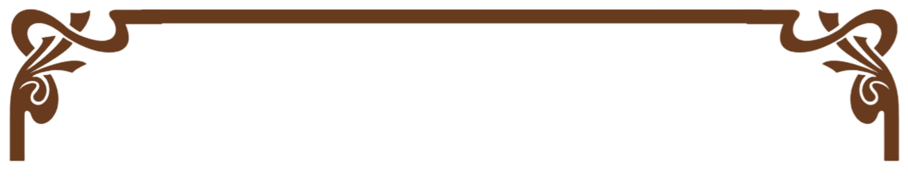

LOVE
Story
Awal Bertemu
Kami pertama kali bertemu saat duduk di bangku SMA. Awalnya hanya sebatas teman sekelas, ngobrol seperlunya, dan saling lempar tawa di sela pelajaran. Siapa sangka, pertemuan itu jadi awal cerita panjang kami.
Pertunangan
Setelah melewati banyak cerita, suka duka, dan perjalanan bersama, kami memutuskan untuk melangkah ke tahap yang lebih serius: bertunangan.